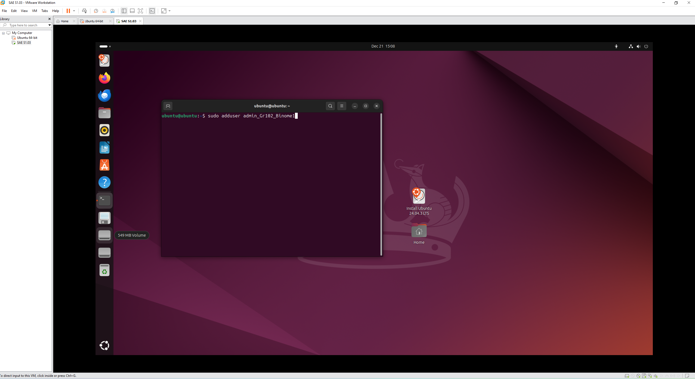
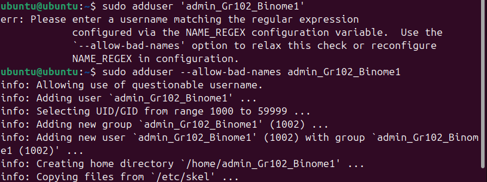
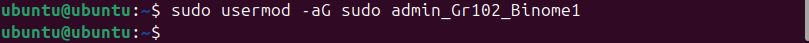
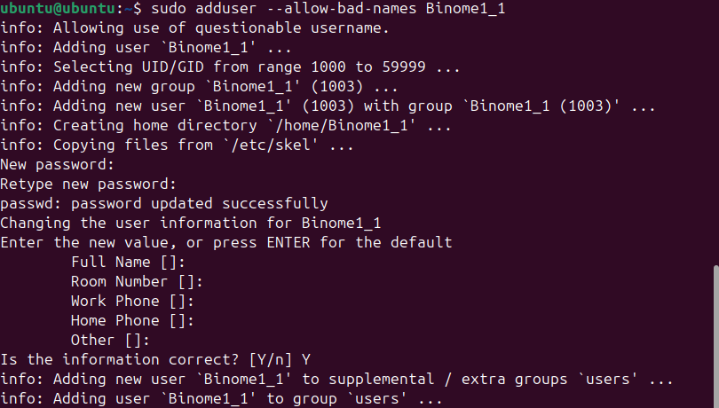
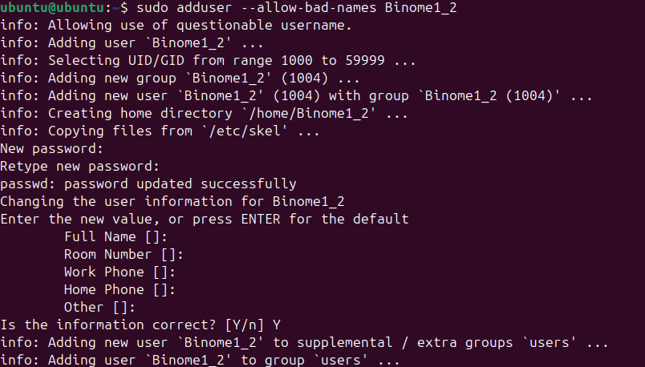
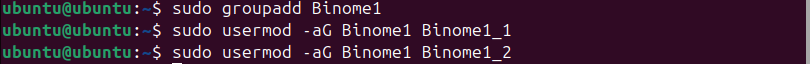
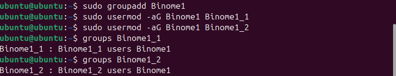

On ouvre un terminal. On ajoute un nouvel utilisateur avec cette commande :

Le nom ne respecte pas la norme, on doit donc utiliser l’option –allow-bad-names :

On crée ensuite un mot de passe pour cet utilisateur, puis on le lui donne un Full name (on donne celui par défaut en tapant Entrée) :
On finit la configuration de cet utilisateur (on laisse par défaut)
On donne les droits d’administrateur à cet utilisateur avec cette commande :

On doit maintenant ajouter 2 utilisateurs : on utilise la même commande que pour l’ajout de l’administrateur, et on fait la même configuration du mot de passe et des informations complémentaires :


On doit maintenant créer un groupe et ajouter les 2 utilisateurs à ce groupe :

On peut vérifier qu’ils ont bien été ajoutés au groupe avec la commande groups qui affiche tous les groupes d’un utilisateur :
